Environmental Data Analysis and Visualization
Things I sometimes hear around final project deadlines…
- Is it OK if I don’t have a significant relationship?
- Do I need to revise my project if I can’t answer my question with the data?
- What if my results don’t show anything exciting/interesting?
Science
Science fails
Science fails all
Science fails all the
Science fails all the time
Science fails all the time.
Science fails all the time.
And that’s OK.
Does this mean I asked a bad question?
Does this mean I asked a bad question?
No.
Does this mean I asked a bad question?
No. Developing research questions takes time and practice. But they should never be asked with the expressed aim of getting a “significant” result.
Perverse incentives
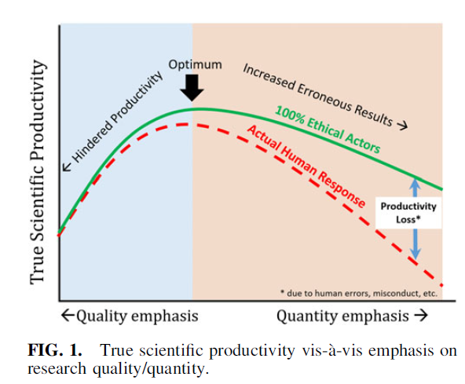

Edwards and Roy 2017 Academic Research in the 21st Century DOI: 10.1089/ees.2016.0223
Fail productively

A negative result is a result nonetheless.
If your assumptions/predictions didn’t work out, ask why not.
If your results are inconclusive, ask what data might be needed.
How does your result compare with other studies?
Fail productively, fail gloriously
“To fail productively, one has to be aware of the multiple contexts of that fail to find the valuable experience. To fail gloriously is to use the privileges that you have, as you are able, to make it safe for others to fail.” - Shawn Graham, Failing Gloriously
Base plot
Base plot
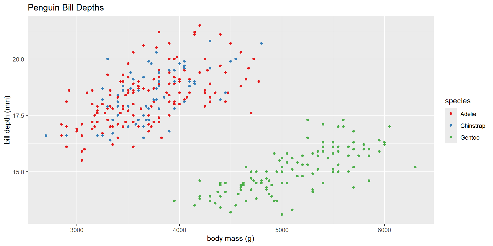Using complete themes
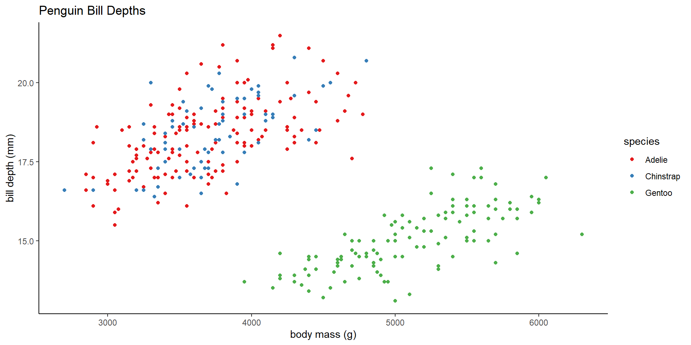Using complete themes
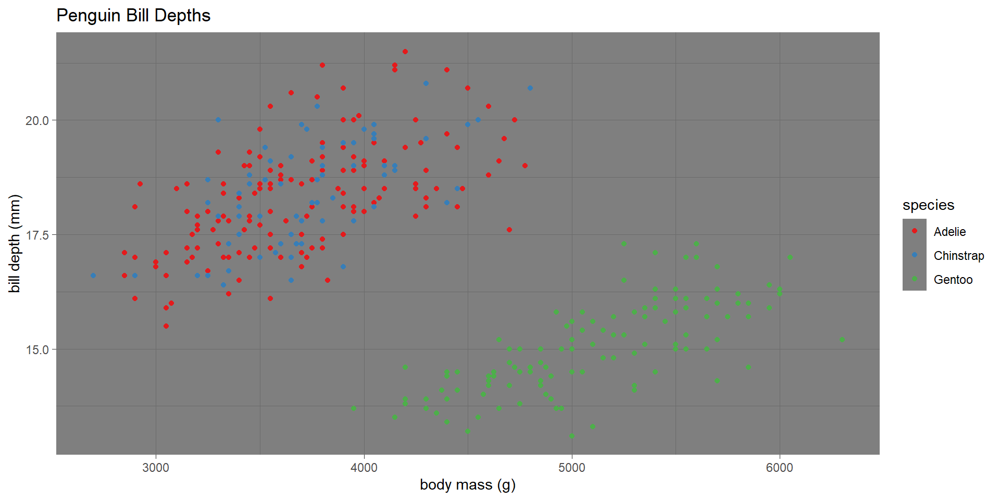Even more complete themes
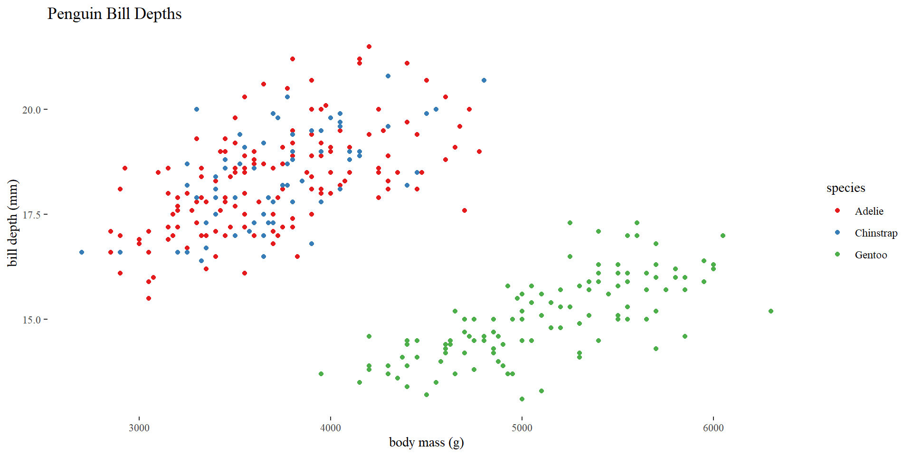Even more complete themes
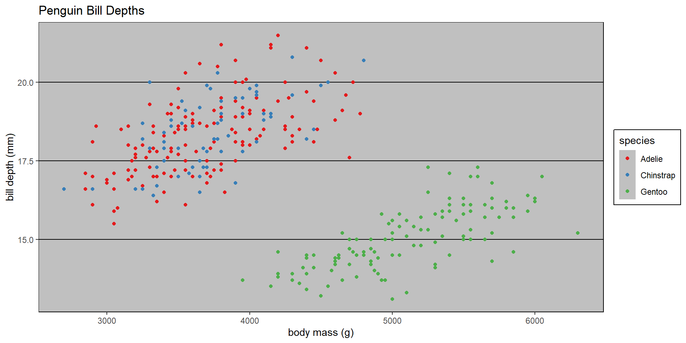Customizing appearance with theme
Theme elements are the non-data parts of your plot (e.g., text, These can be accessed using the theme function:
basePlot + theme(element.name = element_function())
Where element.name refers to the element of the graph (e.g., axis.ticks for the tick marks), and the element_function controls what aspect of it is going to be changed (e.g., line width).
Customizing appearance with theme
element_text()controls text face, color, size, angle, etc.element_line()controls line color, linewidth, and linetypeelement_rect()controls rectangular areas fill and border lineelement_blank()controls whether an element is drawn or not- Note: this will remove a drawing rather than make it invisible!
Customizing plot elements
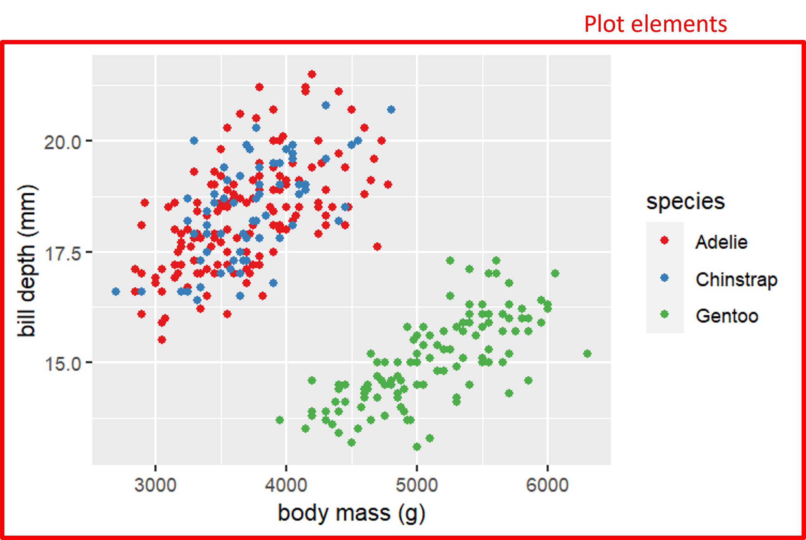Customizing plot elements
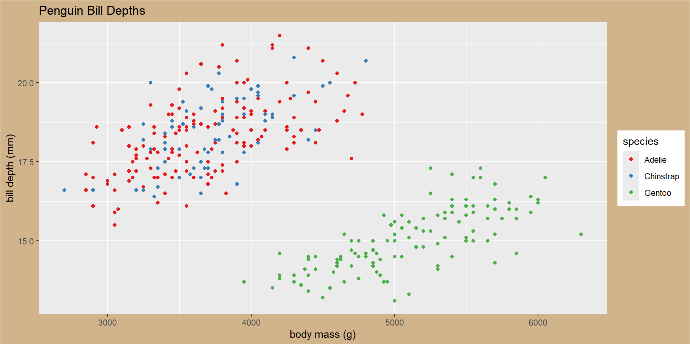Customizing plot elements
Try customizing your graph using the following (use ? to get function help).
| Element | Function | Modifies |
|---|---|---|
| plot.background | element_rect | Plot background area |
| plot.title | element_text | Plot title |
Customizing axis elements
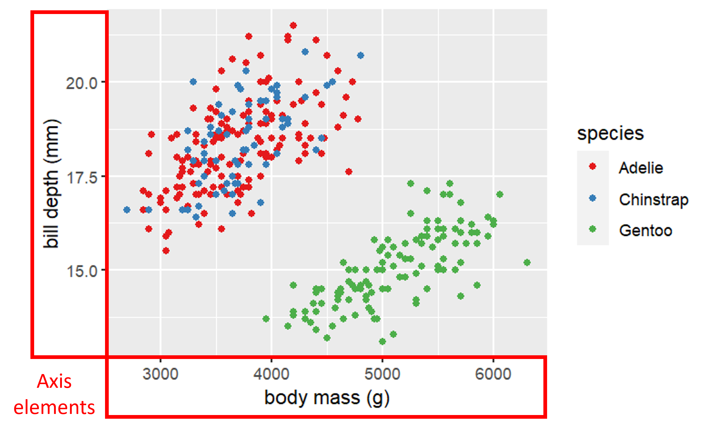Customizing axis elements
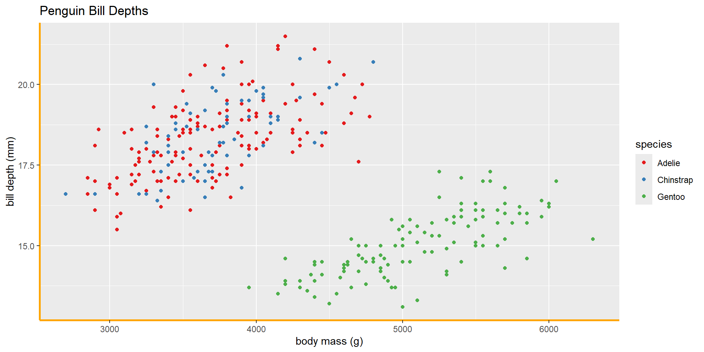Customizing axis elements
You can modify just one axis by adding .x or .y to your element name.
Customizing axis elements
You can remove an element by using element_blank()
Customizing axes
Try customizing your graph using the following (use ? to get function help).
| Element | Function | Modifies |
|---|---|---|
| axis.line | element_line() | Axis line |
| axis.text | element_text() | Text at tick marks |
| axis.title | element_text() | Axis title |
| axis.ticks | element_line() | Tick marks |
| axis.ticks.length | unit() | Length of tick marks |
Customizing panel elements
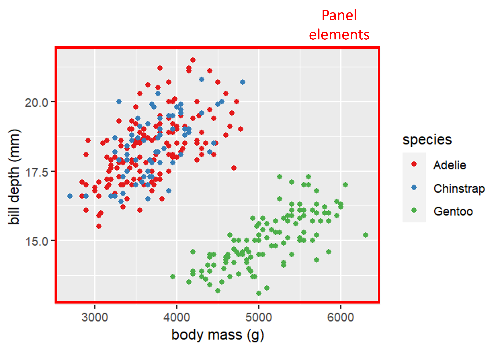Customizing panel elements
Try customizing your graph using the following (use ? to get function help).
| Element | Function | Modifies |
|---|---|---|
| panel.background | element_rect() | Panel background |
| panel.grid.major | element_line() | Major gridlines |
| panel.grid.minor | element_line() | Minor gridlines |
Customizing legend elements
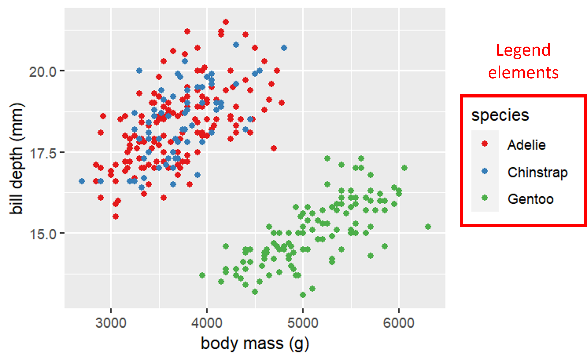Customizing legend elements
Try customizing your graph using the following (use ? to get function help).
| Element | Function | Modifies |
|---|---|---|
| legend.background | element_rect() | legend background |
| legend.key | element_rect() | background of legend keys |
| legend.text | element_text() | legend labels |
| legend.title | element_text() | legend name |
Output to file
Use ggsave to output to a file and control its size
ggsave("baseplot.pdf",basePlot,width=6,height=4,units="in")
Image file formats
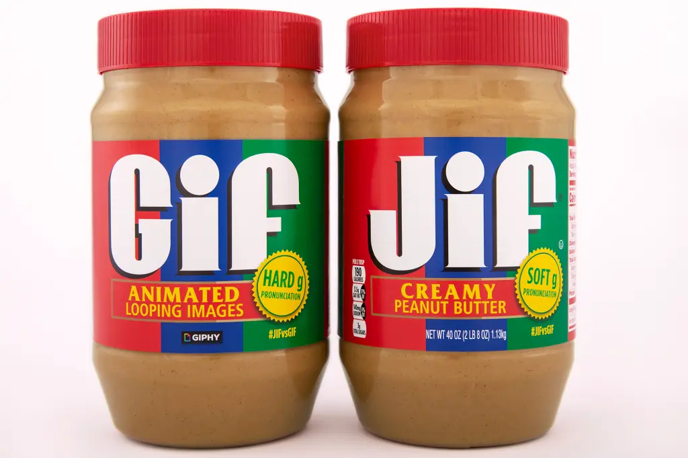Jif / Giphy
Image file formats
There are two main types of image formats
Bitmap (also known as raster)
Vector
Bitmap vs Vector
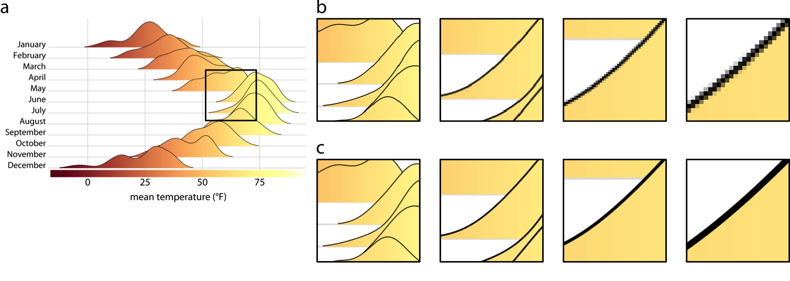Wilke, C. 2019. Fundamentals of Data Visualization
Bitmap vs Vector
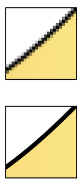Wilke, C. 2019. Fundamentals of Data Visualization
Bitmap vs Vector
Bitmap
Sharpness depends on resolution and size
Consistent appearance across platforms
Best for complex images (photos, large numbers of elements)
Vector
Sharpness is scale-independent
Can look differently using different programs
Best for simple images (line drawings, simple graphs)
Image file formats
| File Extension | Type | Use For |
|---|---|---|
| .jpg | Bitmap | Photos |
| .png | Bitmap | Line Drawings |
| .tif | Bitmap | |
| .svg | Vector | Line drawings (online) |
| Vector | General purpose |
Coursekeeping
For the remainder of the day: Lab 10 on data modeling
Tuesday/Wednesday: Office hours 4-5PM Tuesday or by appointment
Wednesday: Finishing touches on posters/presentations and deliver them!